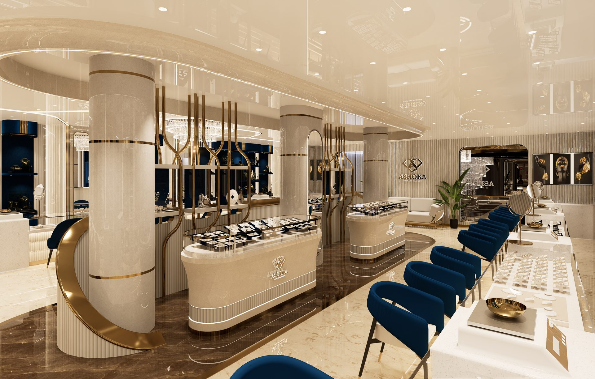
Since 1993, we've shaped the showrooms where South India's most trusted jewellery houses meet their clientele — from first sketch to final handover.
We've grown beyond the role of architects into strategic partners in retail evolution. Our design philosophy unites neoclassical refinement with contemporary precision — shaping environments that are as commercially astute as they are visually compelling.
Every space we design is built to elevate brand presence, engage a discerning clientele, and translate spatial experience into measurable footfall and sales.
See How We Work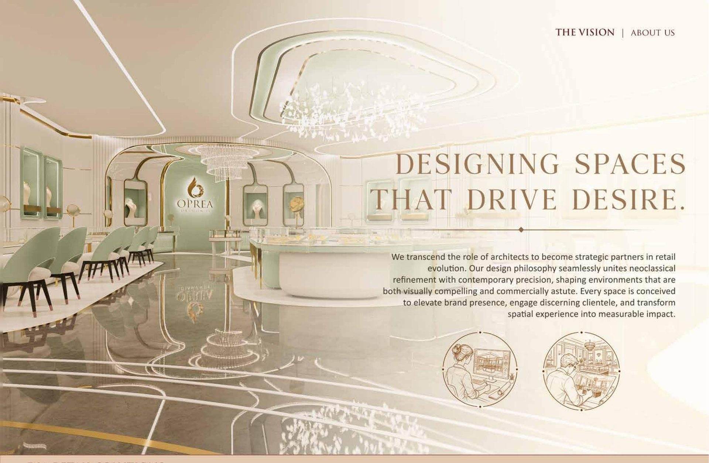
Window displays and in-store staging engineered to catch the eye and hold it — turning browsing into buying.
End-to-end showroom architecture — from spatial planning and lighting to bespoke fixtures and finishes.
Full-cycle project delivery — Revit-modeled documentation, disciplined execution, and on-time handover.
Spatial storytelling that turns a store visit into a memory — the difference between a sale and a relationship.
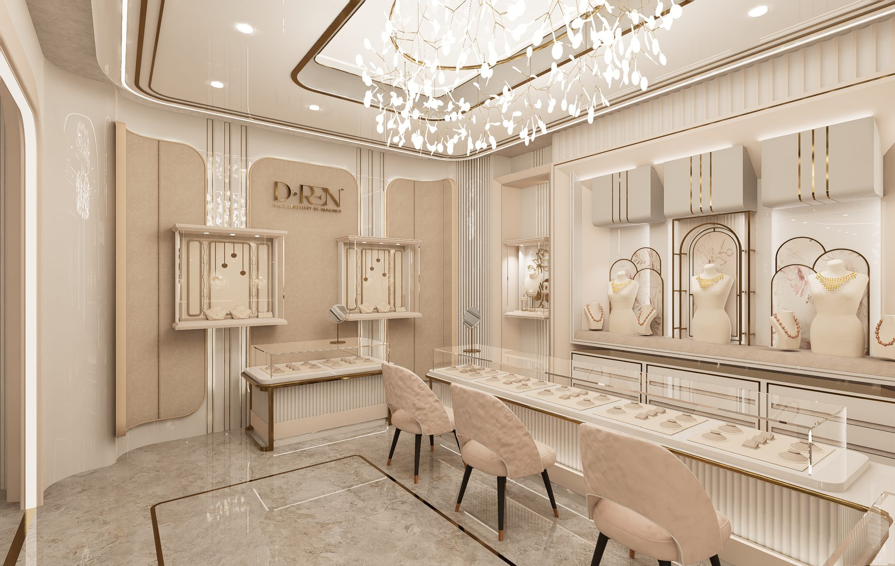
Anchored in deep local understanding and executed at regional scale, our teams move fluidly between established cityscapes and fast-growing towns — carrying the same precision and quiet efficiency to every site.
150+ destinations and counting — each one a jewellery house's story, told in marble, brass and light.
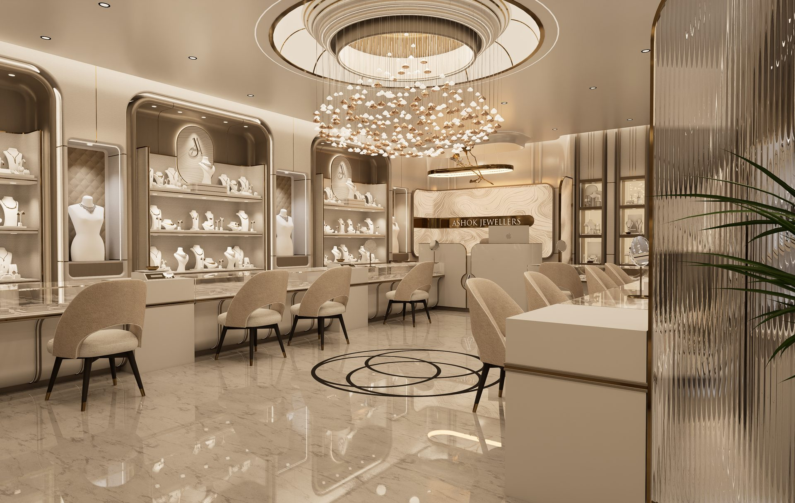
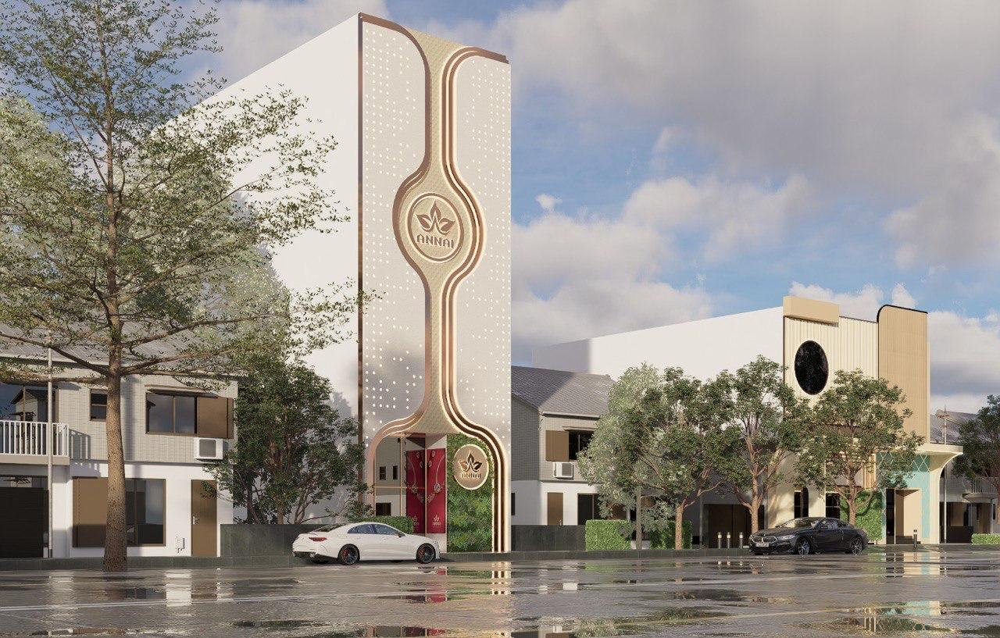
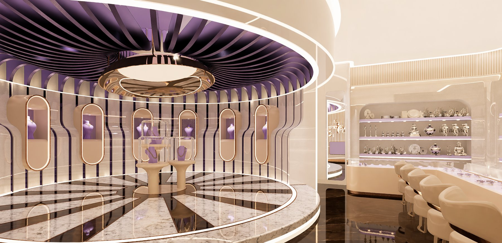
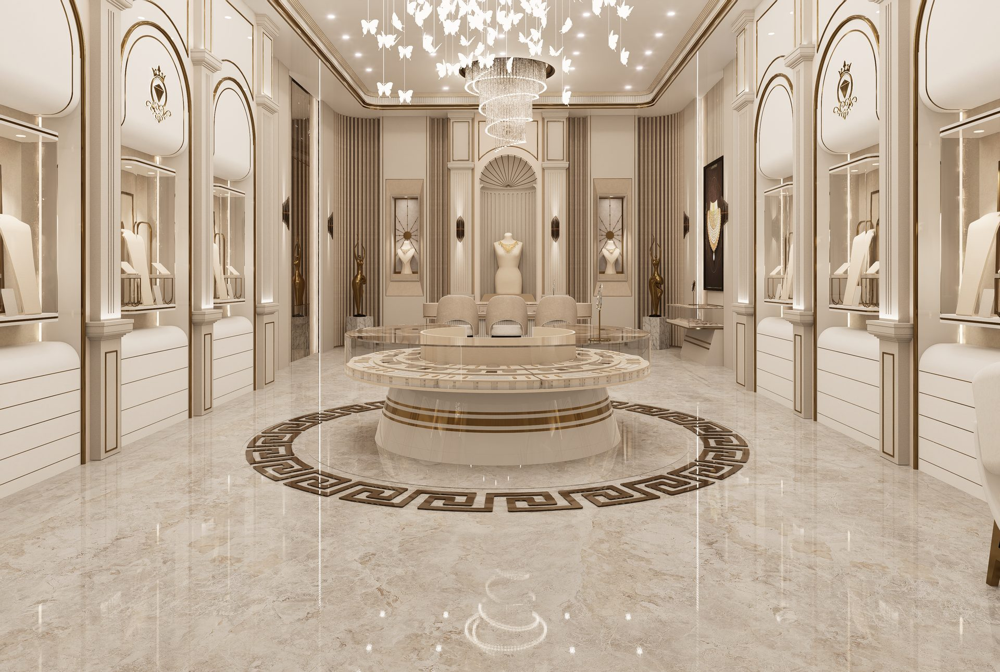
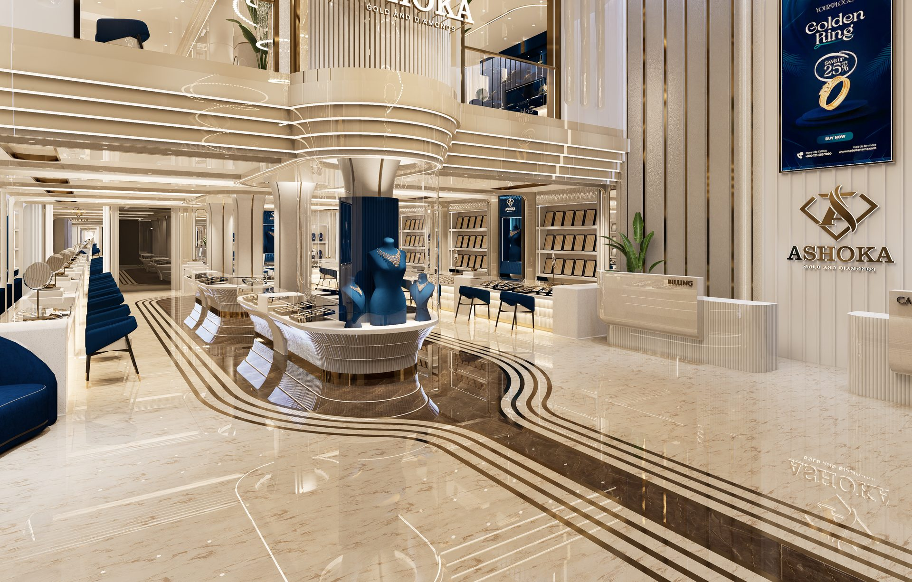
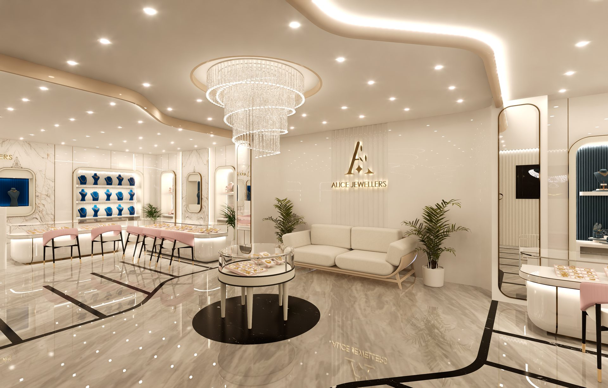
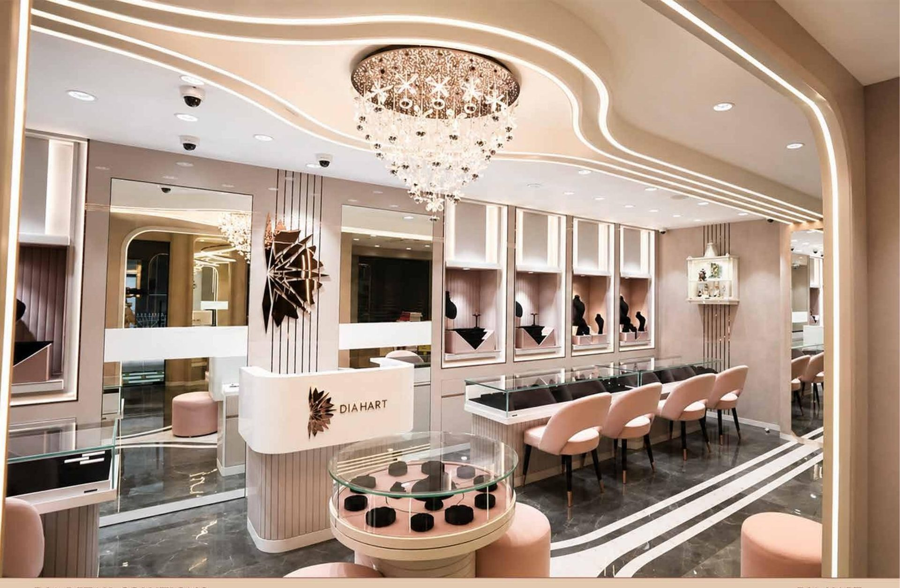
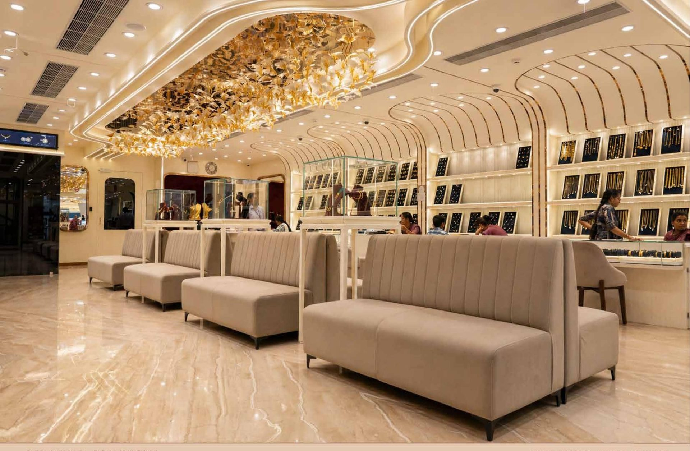
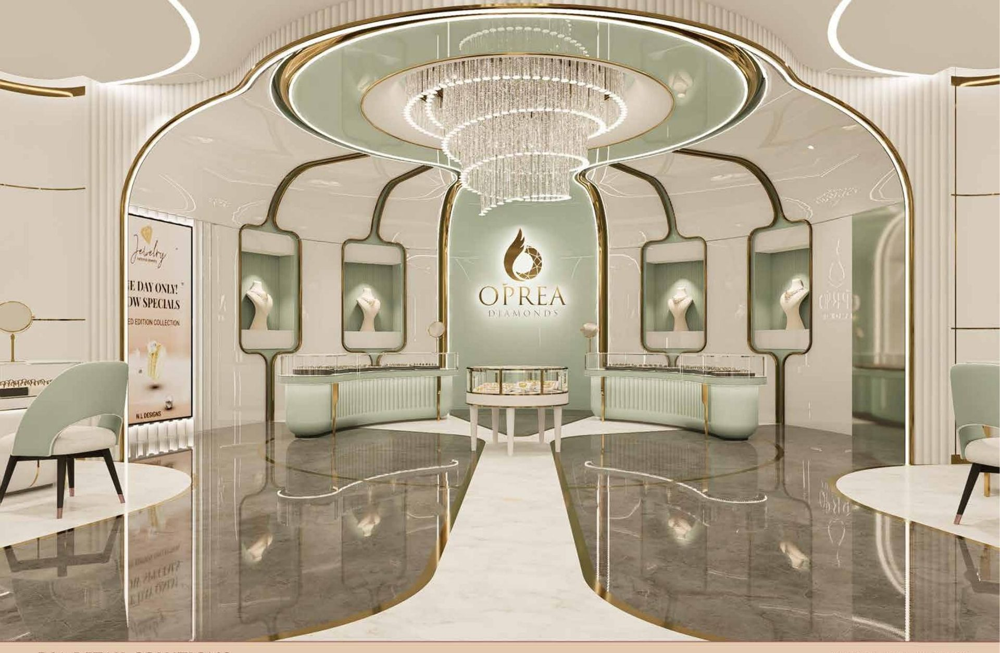
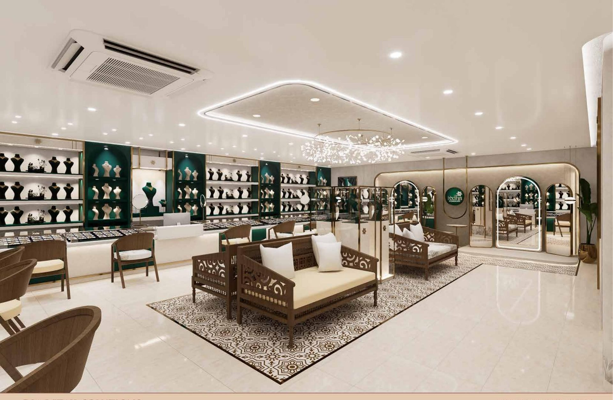
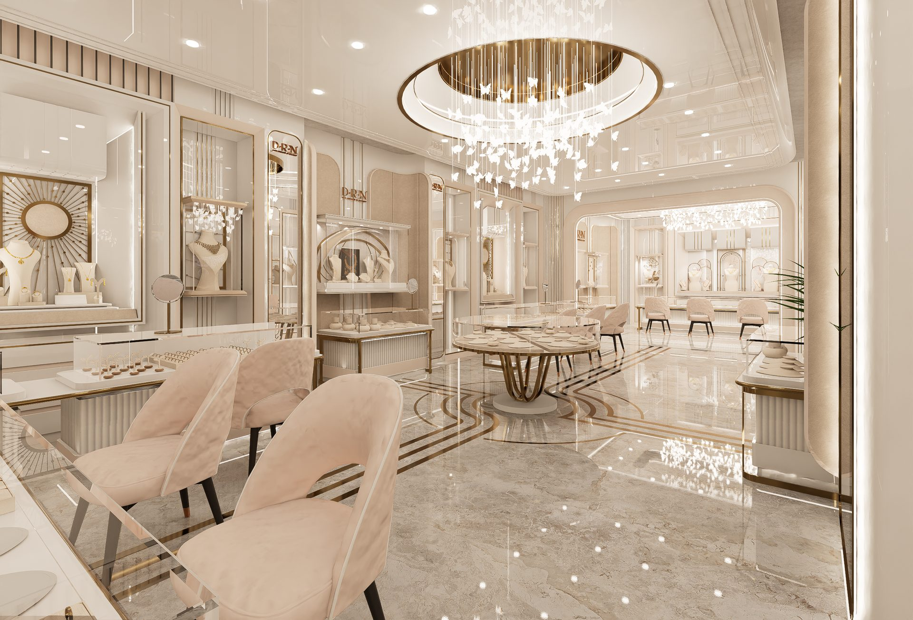
From concept to completion, translating design intent into precise execution through disciplined coordination and advanced modeling.
Concept and design intent shaped around your brand's identity and clientele.
Detailed Autodesk Revit modeling and documentation, planned down to the last fixture.
Precision-driven execution with rigorous, on-ground project coordination.
A refined retail environment, delivered on schedule and ready to trade.
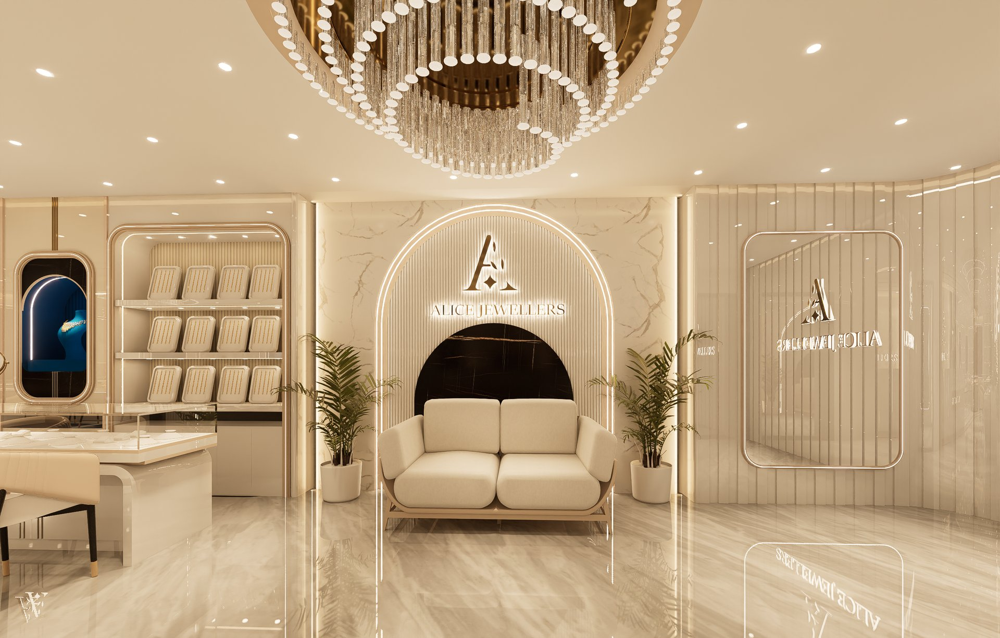
We lead through path-breaking design, delivered via a bespoke, precision-driven execution process — robust BOQs and disciplined project management ensure every space ages gracefully while sustaining its premium appeal.
Pushing boundaries with responsive spaces and designs that lead the way.
Crafted with precision, built to stand the test of time.
Process with precision — no two showrooms delivered the same way twice.
A reflection of enduring trust, consistent delivery, and the tangible ROI our design solutions create.
of our portfolio is repeat partnerships
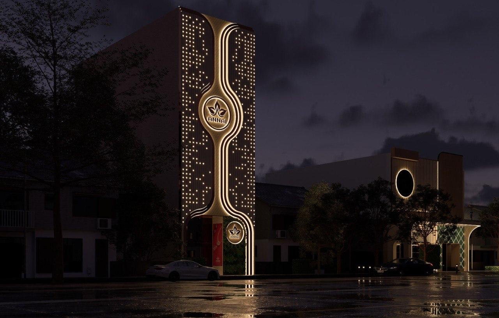